Проект "Музыкальный плеер"
Цель: Создать приложение для воспроизведения музыки с функциями выбора песен, управления воспроизведением и регулировкой громкости.
Этот проект научит вас работать с аудиофайлами, создавать интерактивный интерфейс и программировать кнопки управления мультимедиа.
Чему вы научитесь:
- Добавлять и воспроизводить аудиофайлы
- Создавать кнопки управления воспроизведением
- Работать со списками песен
- Реализовывать регулировку громкости
- Создавать циклическое переключение песен
1
Подготовка ресурсов
2
Создание интерфейса
3
Настройка списка песен
4
Программирование функций
5
Тестирование плеера
Шаг 1: Подготовка аудио ресурсов
- Откройте MIT App Inventor и создайте новый проект с названием "MusicPlayer".
- Нам понадобятся аудиофайлы для воспроизведения. В панели "Palette" (Палитра) найдите раздел "Media" (Медиа).
- Перетащите компонент Player (Проигрыватель) на экран. Этот компонент появится в разделе "Non-visible components" (Невидимые компоненты). 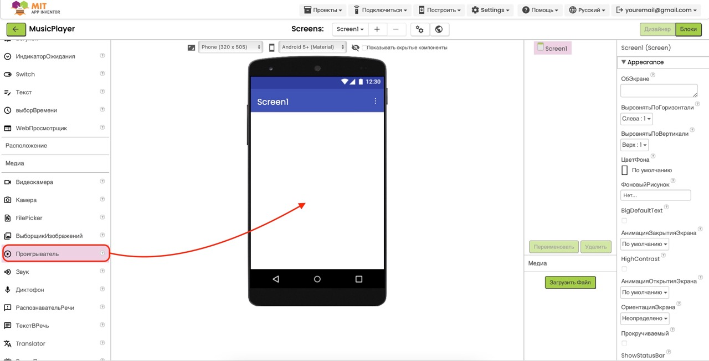
-
Для этого проекта мы будем использовать три песни:
- song1.mp3 - "Энергичная"
- song2.mp3 - "Спокойная"
- song3.mp3 - "Веселая"
-
Загрузите аудиофайлы в проект:
- Скачайте все три песни из нашего центра загрузок в разделе "Музыка для проектов"
- Распакуйте ZIP-архив с песнями
- В MIT App Inventor нажмите на "Upload File..." (Загрузить файл...) в разделе "Media" (Медиа)
- Выберите и загрузите все три MP3-файла
- После загрузки вы увидите все три аудиофайла в списке медиа-ресурсов. Убедитесь, что имена файлов совпадают с теми, что будут использоваться в коде: song1.mp3, song2.mp3 и song3.mp3.


Специально подготовленные файлы: Мы подготовили
три оптимизированные песни для этого проекта, которые имеют
небольшой размер и идеально подходят для использования в MIT App
Inventor. Скачайте их в нашем
центре загрузок
в разделе "Музыка для проектов".
Важно: Используйте именно файлы song1.mp3,
song2.mp3 и song3.mp3, чтобы код из следующих шагов работал
корректно без необходимости изменений. Если вы решите использовать
свои аудиофайлы, убедитесь, что вы соответственно изменили их
имена в блоках программирования.
Шаг 2: Создание интерфейса плеера
-
Создадим интерфейс нашего музыкального плеера, начиная с
основного контейнера:
- В разделе Layout (Макет) найдите компонент VerticalArrangement
- Перетащите его на экран приложения
- В свойствах установите Width (Ширина) и Height (Высота): Fill parent
- В BackgroundColor выберите приятный цвет фона (например, светло-синий или серый)
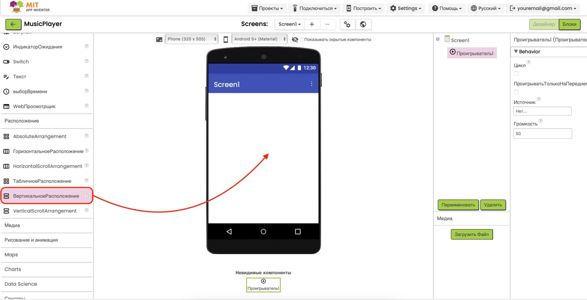
-
Добавим заголовок плеера:
- Из раздела User Interface перетащите компонент Label в VerticalArrangement1
- В свойствах установите Text: "Мой музыкальный плеер"
- Установите TextColor: контрастный к фону цвет
- Установите FontSize: 20 и FontBold: True
- Установите TextAlignment: Center
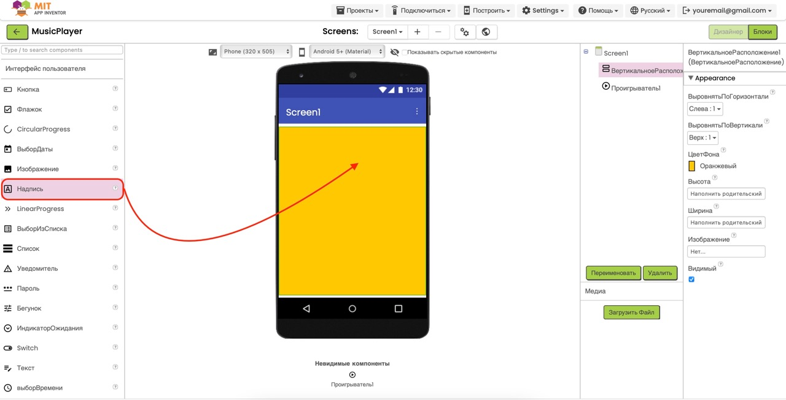
-
Добавим надпись для отображения текущей песни:
- Перетащите еще одну Label в VerticalArrangement1 под заголовком
- В свойствах установите Text: "Сейчас играет: ничего не выбрано"
- Установите Width: Fill parent и TextAlignment: Center
- Установите FontSize: 16
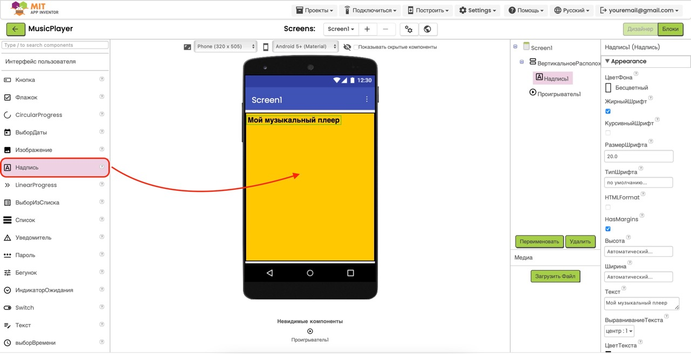
-
Создадим панель с кнопками управления:
- Из раздела Layout перетащите HorizontalArrangement в VerticalArrangement1
- Установите Width: Fill parent и AlignHorizontal: Center
- Из раздела User Interface перетащите три Button в HorizontalArrangement1 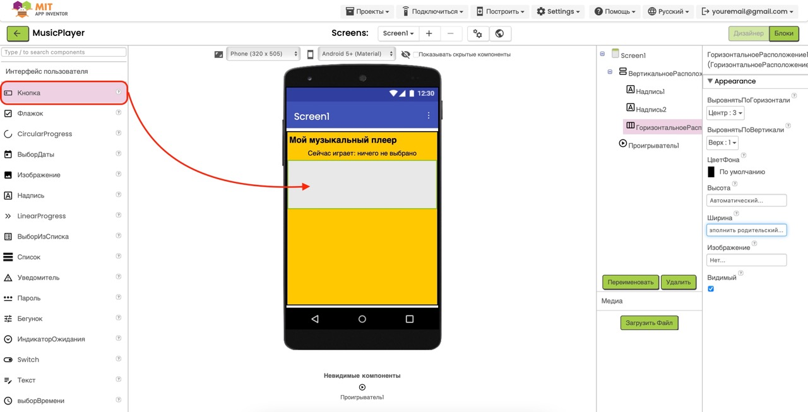
-
Настроим кнопки управления:
- Кнопка 1 (предыдущая песня): Text: "◀", Width: 60, FontSize: 20
- Кнопка 2 (воспроизведение/пауза): Text: "▶", Width: 60, FontSize: 20
- Кнопка 3 (следующая песня): Text: "▶▶", Width: 60, FontSize: 20
-
Добавим ползунок громкости:
- Из раздела User Interface перетащите компонент Slider в VerticalArrangement1
- Установите Width: Fill parent
- Установите MinValue: 0, MaxValue: 100, ThumbPosition: 50
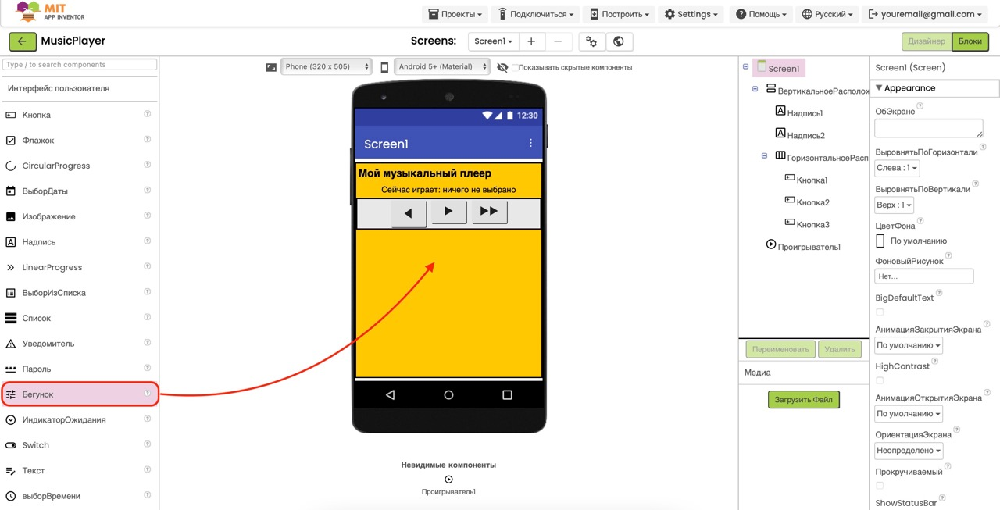
-
Наконец, добавим список песен:
- Из раздела User Interface перетащите компонент ListView в VerticalArrangement1
- Установите Width: Fill parent и Height: 200
- Установите BackgroundColor - выберите контрастный к фону цвет
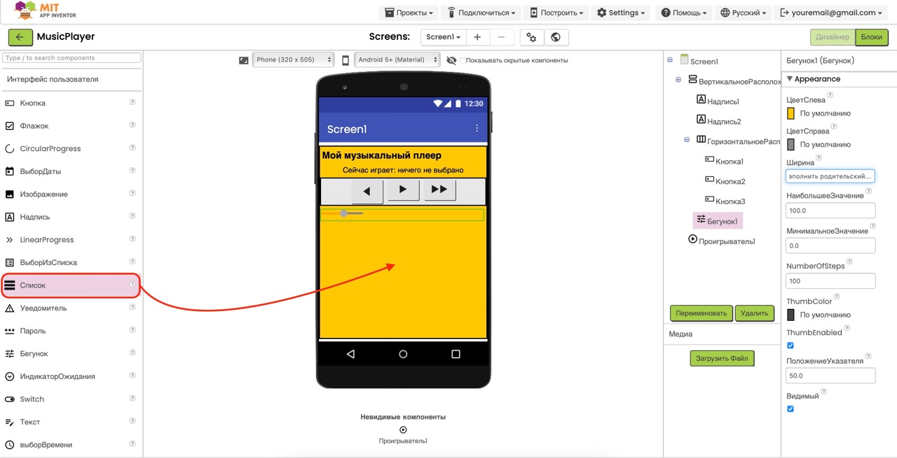
Совет по дизайну: Вместо символов можно
использовать иконки для кнопок, загрузив их как изображения и
установив в свойстве Image кнопок. Также можно
добавить небольшие отступы между элементами, настраивая свойство
Margin.
Шаг 3: Настройка списка песен
- Перейдите во вкладку Blocks (Блоки) для программирования логики приложения.
-
Создадим блок инициализации, который будет выполняться при
запуске приложения:
- В левой панели найдите компонент Screen1
- Выберите блок when Screen1.Initialize
- Перетащите этот блок в рабочую область
-
Создадим список названий песен:
- В левой панели выберите категорию Variables
- Найдите блок initialize global name to
- Перетащите блок в рабочую область (не обязательно внутрь блока initialize)
- Измените имя переменной на songsList
-
Заполним список названиями песен:
- В категории Lists найдите блок make a list
- Перетащите блок в поле значения переменной songsList
- Нажмите на синий значок "+" на блоке make a list нужное количество раз, чтобы добавить поля для всех ваших песен
- В категории Text выберите текстовый блок (кавычки)
- Заполните текстовые блоки названиями песен (например: "Песня 1 - Название", "Песня 2 - Название", "Песня 3 - Название")
-
Аналогично создадим список путей к файлам песен:
- Снова воспользуйтесь блоком initialize global name to
- Назовите переменную songPaths
- Создайте список с помощью блока make a list
- Заполните список именами MP3-файлов, которые вы загрузили (например: "song1.mp3", "song2.mp3", "song3.mp3")
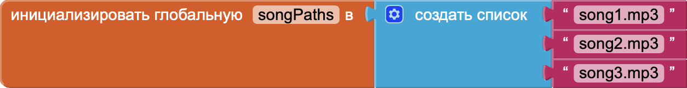
-
Создадим переменную для хранения индекса текущей песни:
- Добавьте еще один блок initialize global name to
- Назовите переменную currentSongIndex
- Установите начальное значение равным 1 (в MIT App Inventor индексы списков начинаются с 1)
-
Теперь добавим код инициализации в блок
when Screen1.Initialize:
-
Заполним ListView1 названиями песен:
- В категории ListView1 найдите блок set ListView1.Elements to
- Перетащите этот блок внутрь блока when Screen1.Initialize
- В поле значения перетащите переменную global songsList из категории Variables
-
Заполним ListView1 названиями песен:
-
Установим начальный источник для Player1:
- В категории Player1 найдите блок set Player1.Source to
- Перетащите этот блок внутрь блока when Screen1.Initialize под предыдущим блоком
- В категории Lists найдите блок select list item
- Перетащите этот блок в поле значения set Player1.Source to
- В первое поле блока select list item перетащите global songPaths
- Во второе поле перетащите global currentSongIndex
-
Установим начальный текст для метки текущей песни:
- В категории Label2 найдите блок set Label2.Text to
- Перетащите этот блок внутрь блока when Screen1.Initialize под предыдущими блоками
- В категории Text найдите блок join
- Перетащите блок join в поле значения set Label2.Text to
- В первое поле блока join введите текст "Сейчас играет: "
- Во второе поле перетащите блок select list item
- В блоке select list item: в первое поле - global songsList, во второе - global currentSongIndex
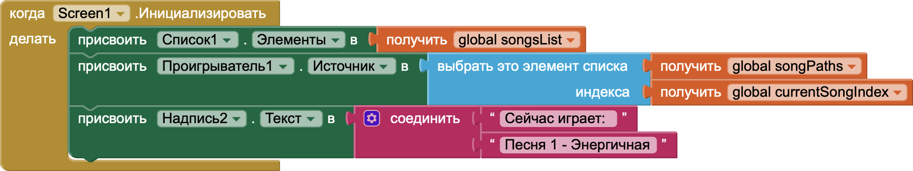

Важно! Порядок песен в списке
songsList должен точно соответствовать порядку
файлов в списке songPaths. Например, если "Песня
1" находится на первой позиции в songsList, то
"song1.mp3" должен быть на первой позиции в
songPaths.
Шаг 4: Программирование функций управления
-
Программирование выбора песни из списка:
- В левой панели найдите компонент ListView1
- Выберите блок when ListView1.AfterPicking
- Перетащите этот блок в рабочую область
- Этот блок активируется, когда пользователь выбирает песню из списка
-
Обновление индекса текущей песни:
- В категории Variables найдите блок set global currentSongIndex to
- Перетащите этот блок внутрь блока when ListView1.AfterPicking
- В категории ListView1 найдите блок ListView1.SelectionIndex
- Перетащите его в поле значения set global currentSongIndex to
-
Установка источника для воспроизведения:
- В категории Player1 найдите блок set Player1.Source to
- Перетащите этот блок внутрь блока when ListView1.AfterPicking под предыдущим блоком
- В категории Lists найдите блок select list item
- Перетащите его в поле значения set Player1.Source to
- В блоке select list item: в первое поле - global songPaths, во второе - global currentSongIndex
-
Запуск воспроизведения:
- В категории Player1 найдите блок call Player1.Start
- Перетащите этот блок внутрь блока when ListView1.AfterPicking под предыдущими блоками
-
Обновление текста с названием песни:
- В категории Label2 найдите блок set Label2.Text to
- Перетащите этот блок внутрь блока when ListView1.AfterPicking под предыдущими блоками
- В категории Text найдите блок join
- Перетащите блок join в поле значения set Label2.Text to
- В первое поле блока join введите текст "Сейчас играет: "
- В категории Lists найдите блок select list item
- Перетащите его во второе поле блока join
- В блоке select list item: в первое поле - global songsList, во второе - global currentSongIndex
-
Обновление значка кнопки воспроизведения/паузы:
- В категории Button2 найдите блок set Button2.Text to
- Перетащите этот блок внутрь блока when ListView1.AfterPicking под предыдущими блоками
- В поле значения введите текст "❚❚" (символ паузы)
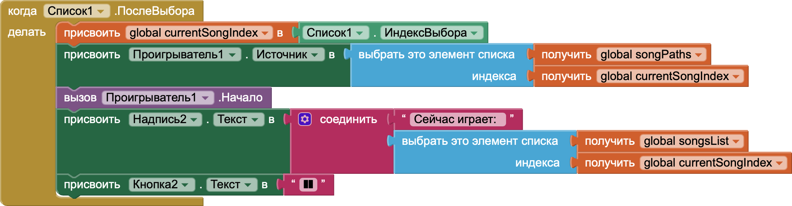
-
Программирование кнопки воспроизведения/паузы:
- В левой панели найдите компонент Button2
- Выберите блок when Button2.Click
- Перетащите этот блок в рабочую область
- В категории Control найдите блок if then else
- Перетащите этот блок внутрь блока when Button2.Click
- В категории Player1 найдите блок Player1.IsPlaying
- Перетащите его в условие блока if then else
-
Действия для паузы (когда музыка играет):
- В категории Player1 найдите блок call Player1.Pause
- Перетащите этот блок в секцию then блока if then else
- В категории Button2 найдите блок set Button2.Text to
- Перетащите этот блок в секцию then под предыдущим блоком
- В поле значения введите текст "▶" (символ воспроизведения)
-
Действия для воспроизведения (когда музыка на паузе):
- В категории Player1 найдите блок call Player1.Start
- Перетащите этот блок в секцию else блока if then else
- В категории Button2 найдите блок set Button2.Text to
- Перетащите этот блок в секцию else под предыдущим блоком
- В поле значения введите текст "❚❚" (символ паузы)
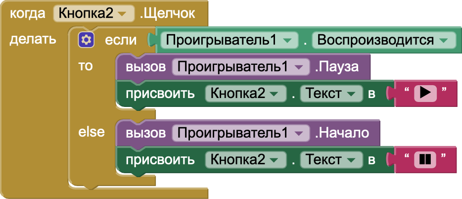
-
Программирование кнопки "предыдущая песня":
- В левой панели найдите компонент Button1
- Выберите блок when Button1.Click
- Перетащите этот блок в рабочую область
-
Уменьшение индекса текущей песни:
- В категории Variables найдите блок set global currentSongIndex to
- Перетащите этот блок внутрь блока when Button1.Click
- В категории Math найдите блок с оператором минус _ - _
- Перетащите этот блок в поле значения set global currentSongIndex to
- В левое поле блока _ - _ перетащите блок global currentSongIndex из категории Variables
- В правое поле блока _ - _ введите число 1
-
Проверка на выход за границы списка:
- В категории Control найдите блок if then
- Перетащите этот блок внутрь блока when Button1.Click под предыдущим блоком
- В категории Logic найдите блок сравнения _ < _ (меньше)
- Перетащите этот блок в условие блока if then
- В левое поле блока _ < _ перетащите блок global currentSongIndex
- В правое поле блока _ < _ введите число 1
-
Действия при выходе за нижнюю границу:
- В категории Variables найдите блок set global currentSongIndex to
- Перетащите этот блок в секцию then блока if then
- В категории Lists найдите блок length of list
- Перетащите этот блок в поле значения set global currentSongIndex to
- В поле блока length of list перетащите блок global songsList
-
Обновление источника и начало воспроизведения:
- После блока if then добавьте блок set Player1.Source to
- Настройте его так же, как в обработчике выбора песни (используя блок select list item)
- Добавьте блок call Player1.Start
- Обновите текст Label2 (как в обработчике выбора песни)
- Установите текст Button2 на "❚❚" (символ паузы)
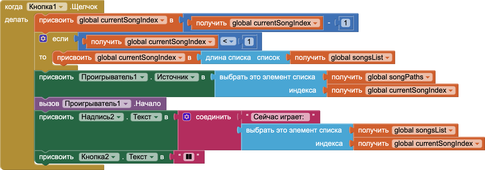
-
Программирование кнопки "следующая песня":
- Аналогично запрограммируйте обработчик для Button3
- Отличия: увеличивайте индекс (+1 вместо -1) и проверяйте верхнюю границу (> вместо <)
- При выходе за верхнюю границу устанавливайте индекс равным 1
- Остальные действия идентичны кнопке "предыдущая песня"
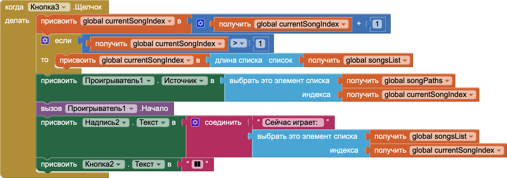
-
Настройка ползунка громкости:
- В левой панели найдите компонент Slider1
- Выберите блок when Slider1.PositionChanged
- Перетащите этот блок в рабочую область
- В категории Player1 найдите блок set Player1.Volume to
- Перетащите этот блок внутрь блока when Slider1.PositionChanged
- В категории Math найдите блок деления _ / _
- Перетащите этот блок в поле значения set Player1.Volume to
- В левое поле блока деления перетащите блок Slider1.ThumbPosition из категории Slider1
- В правое поле блока деления введите число 100
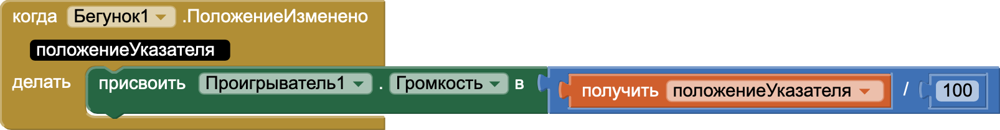
Совет: Для улучшения кода вы можете создать
процедуру для переключения песен с параметром "направление"
(например, -1 для предыдущей песни и +1 для следующей). Это
позволит избежать дублирования кода и сделает его более
поддерживаемым.
Важно! При программировании кнопок переключения
песен всегда выполняйте все три действия: обновление источника
Player1, запуск воспроизведения И обновление текста Label2.
Пропуск любого из этих шагов приведет к некорректной работе
приложения.
Шаг 5: Тестирование плеера
-
Протестируйте ваше приложение:
Чтобы увидеть ваш музыкальный плеер в действии, воспользуйтесь руководством по тестированию приложений в нашем введении в MIT App Inventor. После запуска приложения выберите песню из списка и используйте кнопки управления!

Поздравляем! Ваш музыкальный плеер теперь готов!
Вы можете выбирать песни из списка, управлять воспроизведением и
регулировать громкость прямо в вашем приложении.
Скачать проект
Если у вас возникли сложности, вы можете скачать готовый файл проекта в нашем центре загрузок:
Перейти в центр загрузок